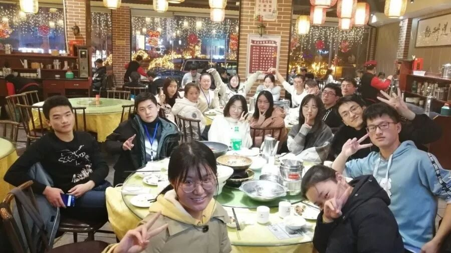
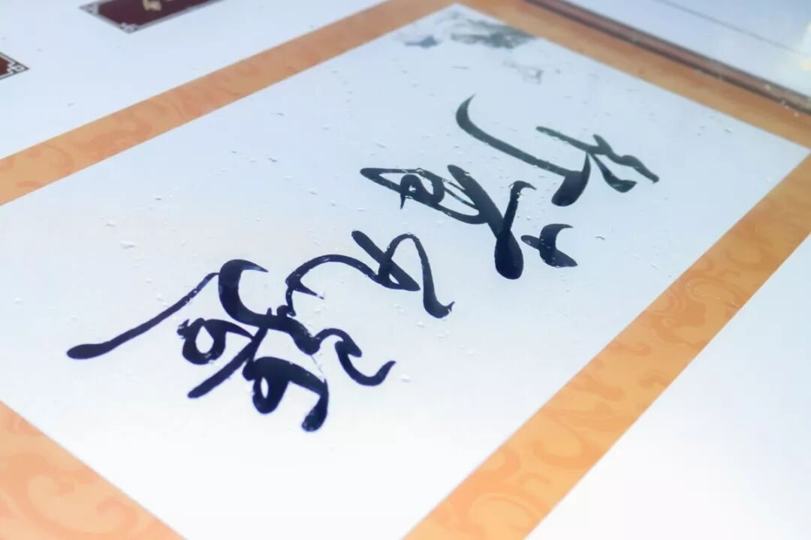
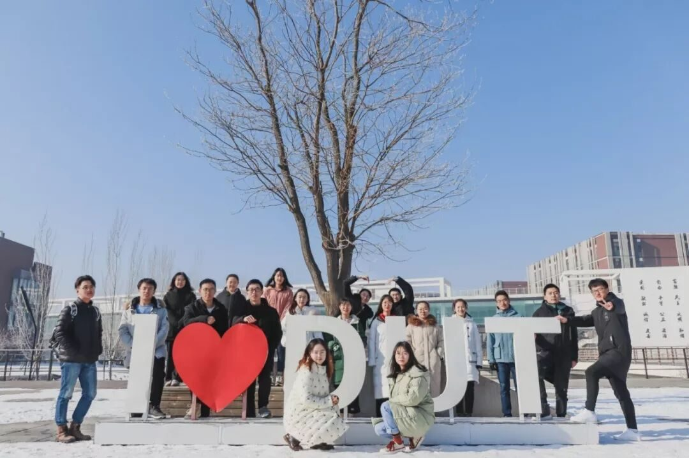
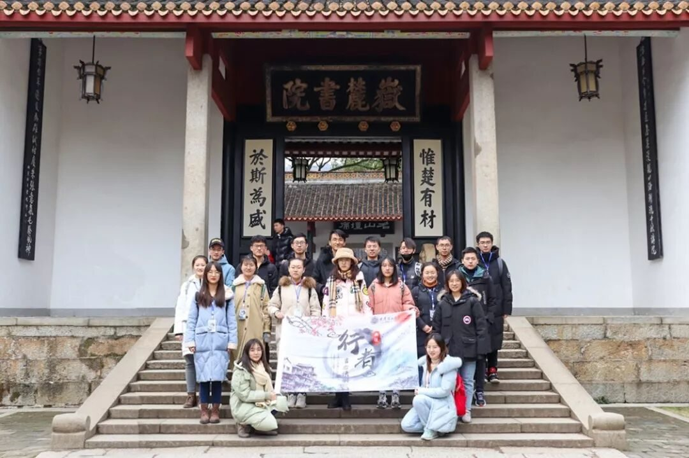
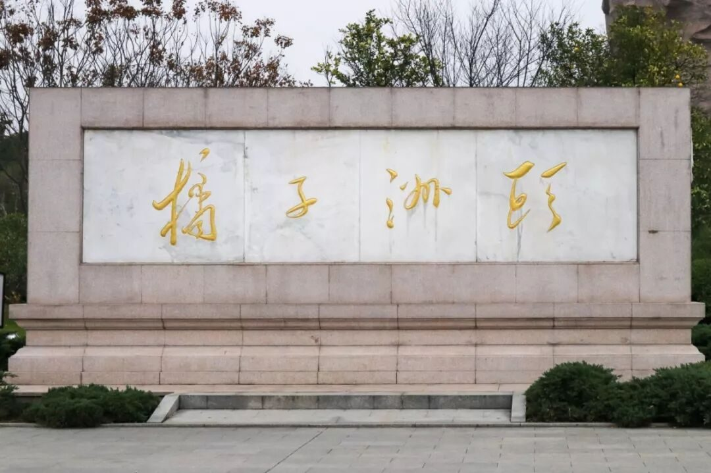
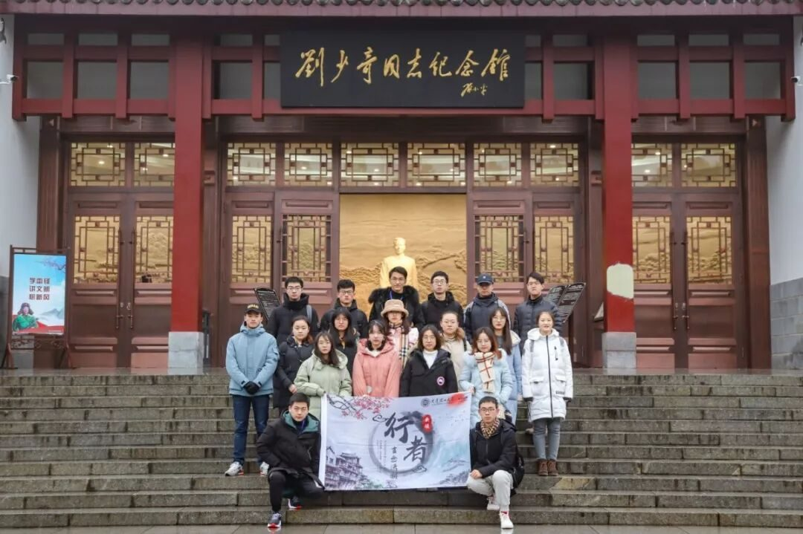
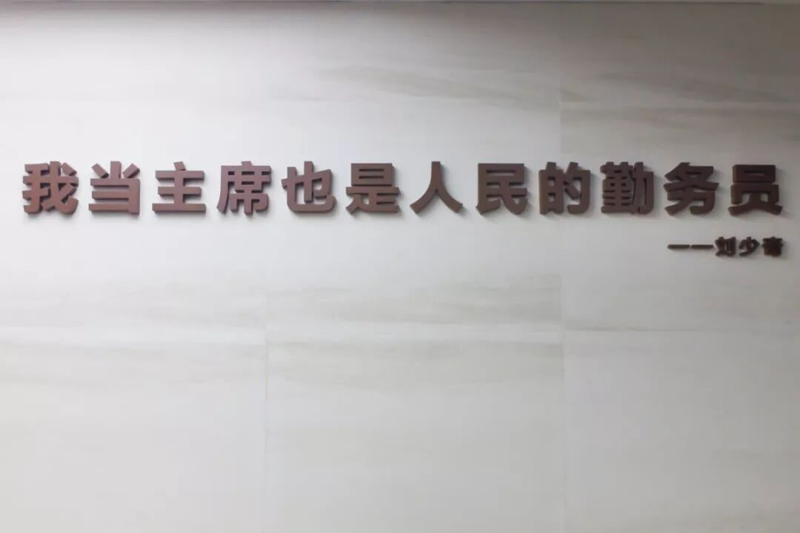
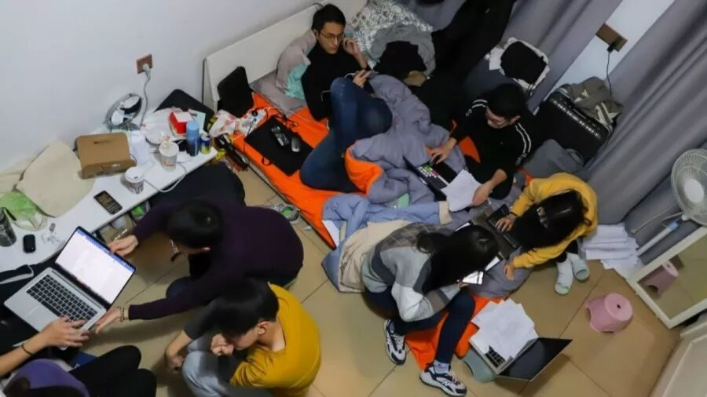
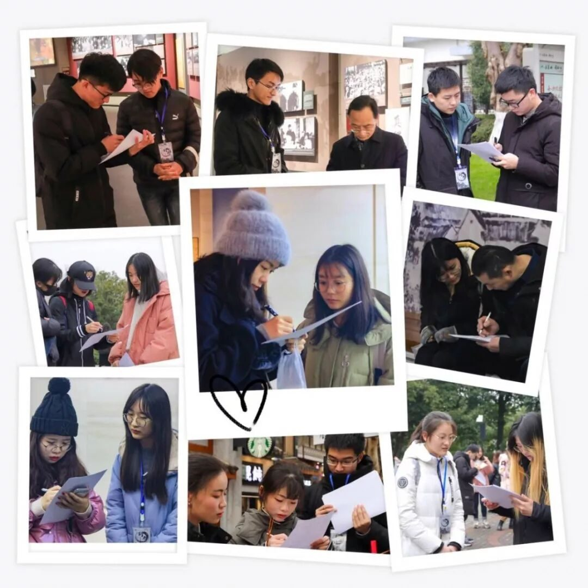
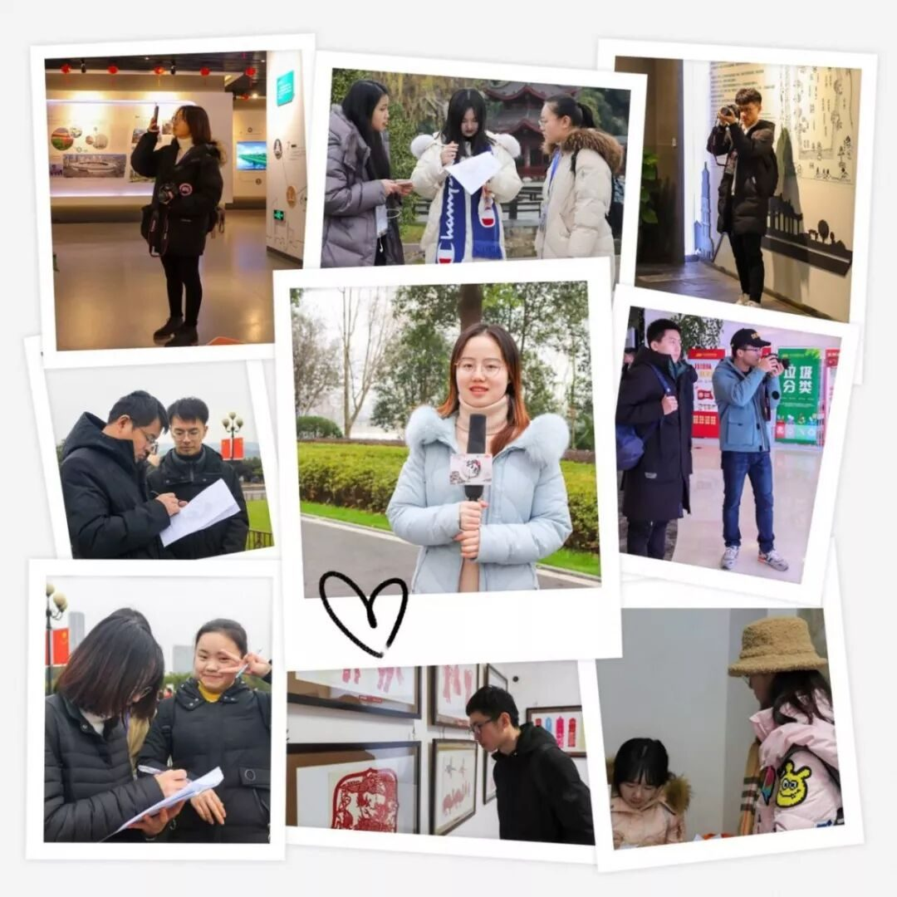

【赋墨沉湘·十六】一念起，自此相聚成缘。


行者无疆，初时听到这个名字时，我首先想到的便是余秋雨先生所著《行者无疆》一书。
书虽是幼时所读，书中一言却始终记于心间：
“有人把生命局促于
互窥互监、互猜互损
有人把生命释放于
大地长天、远山沧海”。
见到行者无疆的招募信息时，冥冥之中似乎有一个声音在我耳畔低语呢喃道“就是它了”。

行者无疆
言念潇湘

我相信文化是有磁场的
正因如此
它将来自五湖四海的行者们吸引到一起
之前求学于长沙，我走过长沙大大小小的街巷，吃过各种风味的长沙小吃，也看过千姿百态的市井风情，对长沙的描绘大抵都是细线条的刻画。这一次的潇湘之行，我换了一种心态，重游长沙，尝试着用粗线条勾勒长沙的轮廓。
五日行程虽短，所获却匪浅。和行者们一同走进岳麓书院，感悟千年学府历久弥新的悠悠传承；一同伫立橘子洲头，重吟“问苍茫大地，谁主沉浮?”之浑厚湘音；一同叩访刘少奇、毛泽东的纪念博物馆，感受“敢为人先，经世致用”之铮铮湘魂




观太平街
过坡子街
在大街上分发问卷
随机采访
感受长沙市井风情
绵绵细雨，寒风刺骨，却步伐坚定，游览长沙市规划展示馆，追寻长沙发展足迹；游览铜官窑，品味望城剪纸，领略沙坪湘绣，寻找长沙民间记忆。
在这次文化之旅中，我主要负责后勤事宜。在出发前难免有些许担心与紧张，但这些都消融在行者们的笑容与包容里。当我迷失在导航里时，行者们都会帮我找路；在发放问卷屡屡被拒时，行者们会传授经验、安慰鼓励我。每天晚上，行者们汇聚一堂，畅所欲言，都收获满满，对每日的见闻经历也有自己独到的见解，思维碰撞出火花，这也是此行别样的风景。



一路走来，一群志同道合的行者，一起行走在追寻文化的路上，回头有一路的故事，低头有坚定的脚步，抬头有清晰的远方。在未来的某一天里，我希望仍可以遇见行者。

来源 | 行者无疆实践团
文字 | 米鑫
排版 | 康艳虎
审核 | 段智然 康艳虎 黄玲
行者无疆实践团
QQ：2758025831

随行者一起认识世界
长按二维码